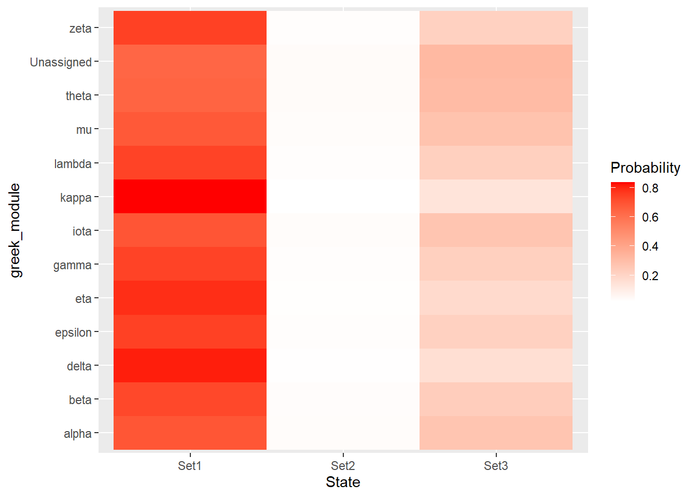
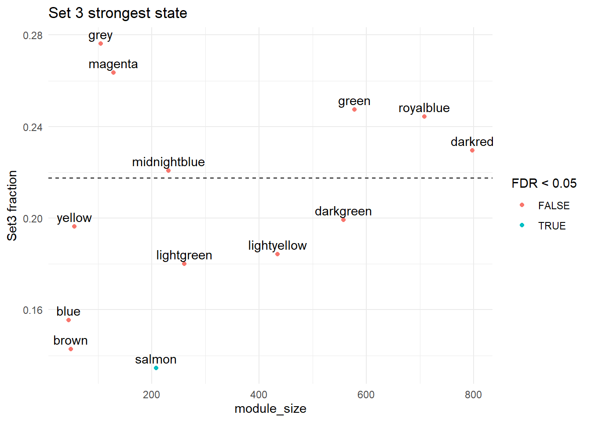
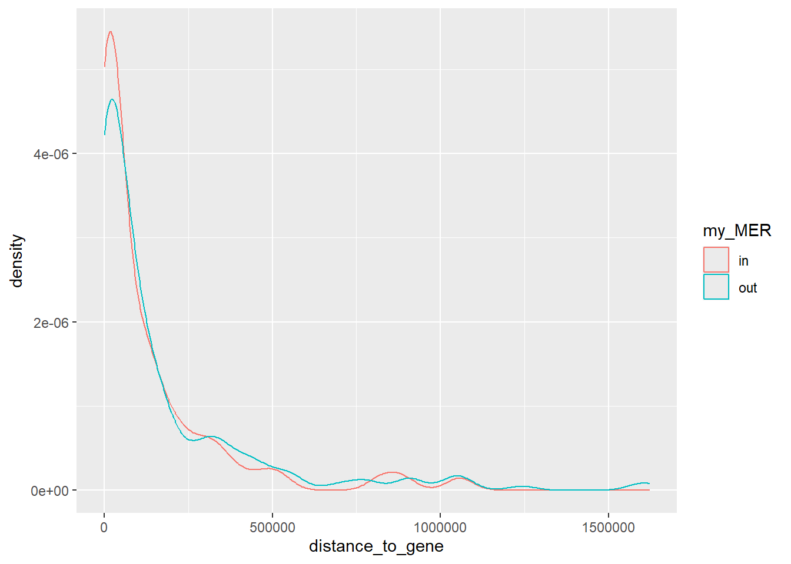

Protein_checks
Renee Matthews
2026-05-14
Last updated: 2026-05-14
Checks: 7 0
Knit directory: DXR_continue/
This reproducible R Markdown analysis was created with workflowr (version 1.7.2). The Checks tab describes the reproducibility checks that were applied when the results were created. The Past versions tab lists the development history.
Great! Since the R Markdown file has been committed to the Git repository, you know the exact version of the code that produced these results.
Great job! The global environment was empty. Objects defined in the global environment can affect the analysis in your R Markdown file in unknown ways. For reproduciblity it’s best to always run the code in an empty environment.
The command set.seed(20250701) was run prior to running
the code in the R Markdown file. Setting a seed ensures that any results
that rely on randomness, e.g. subsampling or permutations, are
reproducible.
Great job! Recording the operating system, R version, and package versions is critical for reproducibility.
Nice! There were no cached chunks for this analysis, so you can be confident that you successfully produced the results during this run.
Great job! Using relative paths to the files within your workflowr project makes it easier to run your code on other machines.
Great! You are using Git for version control. Tracking code development and connecting the code version to the results is critical for reproducibility.
The results in this page were generated with repository version f318257. See the Past versions tab to see a history of the changes made to the R Markdown and HTML files.
Note that you need to be careful to ensure that all relevant files for
the analysis have been committed to Git prior to generating the results
(you can use wflow_publish or
wflow_git_commit). workflowr only checks the R Markdown
file, but you know if there are other scripts or data files that it
depends on. Below is the status of the Git repository when the results
were generated:
Ignored files:
Ignored: .Rhistory
Ignored: .Rproj.user/
Ignored: data/Bed_exports/
Ignored: data/Bed_exportsH3K27ac_summit_gr_ext200.bed
Ignored: data/Cormotif_data/
Ignored: data/DER_data/
Ignored: data/Other_paper_data/
Ignored: data/RDS_files/
Ignored: data/TE_annotation/
Ignored: data/alignment_summary.txt
Ignored: data/all_peak_final_dataframe.txt
Ignored: data/cell_line_info_.tsv
Ignored: data/full_summary_QC_metrics.txt
Ignored: data/motif_lists/
Ignored: data/number_frag_peaks_summary.txt
Untracked files:
Untracked: H3K27ac_all_regions_test.bed
Untracked: H3K27ac_consensus_clusters_test.bed
Untracked: MER61C_ERV1_LTR.fa
Untracked: analysis/GREAT_H3K27ac.Rmd
Untracked: analysis/H3K27ac_ChromHMM_FC.Rmd
Untracked: analysis/H3K27ac_KZFP_motifs.Rmd
Untracked: analysis/H3K27ac_TE_investigation_200bp.Rmd
Untracked: analysis/H3K27me3_TE_investigation.Rmd
Untracked: analysis/H3K36me3_TE_investigation.Rmd
Untracked: analysis/LFC_regions_with_TEs.Rmd
Untracked: analysis/Top2a_Top2b_expression.Rmd
Untracked: analysis/maps_and_plots.Rmd
Untracked: analysis/proteomics.Rmd
Untracked: code/For_john.R
Untracked: other_analysis/
Unstaged changes:
Modified: analysis/ATAC_integration_data1.Rmd
Modified: analysis/chromHMM_2.Rmd
Note that any generated files, e.g. HTML, png, CSS, etc., are not included in this status report because it is ok for generated content to have uncommitted changes.
These are the previous versions of the repository in which changes were
made to the R Markdown (analysis/protein_checks.Rmd) and
HTML (docs/protein_checks.html) files. If you’ve configured
a remote Git repository (see ?wflow_git_remote), click on
the hyperlinks in the table below to view the files as they were in that
past version.
| File | Version | Author | Date | Message |
|---|---|---|---|---|
| Rmd | f318257 | reneeisnowhere | 2026-05-14 | wflow_publish("analysis/protein_checks.Rmd") |
| Rmd | 18bbad2 | reneeisnowhere | 2026-05-11 | wflow_git_commit(c("analysis/H3K27_TE_overlap_extend.Rmd", "analysis/H3K27ac_TE_investigation.Rmd", |
| Rmd | 1b0928c | reneeisnowhere | 2026-05-05 | wflow_git_commit("analysis/protein_checks.Rmd") |
library(tidyverse)
library(GenomicRanges)
library(plyranges)
library(genomation)
library(readr)
library(rtracklayer)
library(stringr)
library(ggrepel)
library(DT)
library(readxl)
library(biomaRt)
library(ggpubr)
library(httr)
library(jsonlite)
library(org.Hs.eg.db)
library(AnnotationDbi)
library(MASS)
library(GenomicFeatures)
library(TxDb.Hsapiens.UCSC.hg38.knownGene)
library(JASPAR2022)
library(TFBSTools)
library(universalmotif)From: Johnson O, Paul S, Gutiérrez J … DNA-damage-associated protein co-expression network in cardiomyocytes informs on tolerance to genetic variation and disease iScience, 2025; 28
mmc3 <- read_excel("C:/Users/renee/Documents/Ward Lab/AC_proteomics/proteins/mmc3.xlsx", skip = 1) %>%
dplyr::select(Protein:Is_CVD_PPI_protein)
write.table(mmc3,"data/Other_paper_data/protein_LFC_Johnson_2025.tsv",sep = "\t",
quote = FALSE,
row.names = FALSE)pulling data
protein_data <- read.delim("data/Other_paper_data/protein_LFC_Johnson_2025.tsv")
KZFP_2026_list <- read_excel("data/Other_paper_data/human_protein_coding_KZFPs_Davis_natgen_2026.xlsx")
# ids <- as.character(protein_data$Protein)
# ids <- trimws(ids)
map <- readRDS( "data/RDS_files/uniprot_map.rds")
map_clean <- map %>%
group_by(Entry) %>%
summarise(
gene = sub(" .*", "", Gene.Names),
.groups = "drop"
)
H3K27ac_ext200_anno <- readRDS("data/TE_annotation/annotated_H3K27ac_ext200_TE_overlaps.RDS")
remap <- AnnotationDbi::select(org.Hs.eg.db,
keys = protein_data$Protein, # your UniProt IDs
keytype = "UNIPROT",
columns = c("SYMBOL", "ENTREZID"))
remap_clean <- remap %>%
dplyr::group_by(UNIPROT) %>%
dplyr::summarise(
SYMBOL = dplyr::first(na.omit(SYMBOL)),
ENTREZID = dplyr::first(na.omit(ENTREZID)),
.groups = "drop")
ext200_anno_map <- AnnotationDbi::select(org.Hs.eg.db,
keys=H3K27ac_ext200_anno$geneId,
keytype = "ENTREZID",
columns = c("SYMBOL","UNIPROT")) %>%
distinct()
Module_lookup <- protein_data %>%
mutate(greek_module=case_when(Module=="green"~"alpha",
Module=="darkgreen"~"beta",
Module=="midnightblue"~"gamma",
Module=="salmon"~"delta",
Module=="lightyellow"~"epsilon",
Module=="lightgreen"~"zeta",
Module=="blue"~"eta",
Module=="magenta"~"theta",
Module=="darkred"~"iota",
Module=="brown"~"kappa",
Module=="yellow"~"lambda",
Module=="royalblue"~"mu",
Module=="grey"~"Unassigned")) %>%
dplyr::select(Module,greek_module) %>%
distinct()
alpha <- "\u03B1" # α
beta <- "\u03B2" # β
gamma <- "\u03B3" # γ
delta <- "\u03B4" # δ
epsilon <- "\u03B5" # ε
zeta <- "\u03B6" # ζ
eta <- "\u03B7" # η
theta <- "\u03B8" # θ
iota <- "\u03B9" # ι
kappa <- "\u03BA" # κ
lambda <- "\u03BB" # λ
mu <- "\u03BC" # μ# human_kzfp <-
# KZFP_2017_list %>%
# dplyr::filter(Species == "Homo_sapiens.GRCh38") %>%
# dplyr::select(Label:strand) %>%
# dplyr::filter(Type=="protein_coding") %>%
# distinct(Label,.keep_all = TRUE)
mart <- useMart("ensembl", dataset = "hsapiens_gene_ensembl",host = "useast.ensembl.org")
listAttributes(mart)
results <- getBM(attributes = c("uniprotswissprot", "hgnc_symbol", "entrezgene_id"),
filters = "uniprotswissprot",
values = protein_data$Protein,
mart = mart)
other_protein_id <- getBM(attributes = c("uniprotswissprot", "hgnc_symbol", "entrezgene_id", "ensembl_gene_id"),
filters = "ensembl_gene_id",
values = KZFP_2026_list$`Gene ID`,
mart = mart)
kzfp_uniprot <- other_protein_id %>%
dplyr::filter(uniprotswissprot!="")
protein_lookup_table <- results %>%
###only keeping protein if has an hgnc_cymbol and entrezid, but keeping the first entrez_id per uniprot id
filter(!is.na(entrezgene_id)| hgnc_symbol != "") %>%
group_by(uniprotswissprot) %>%
slice(1) %>%
ungroup()
KZFP_targets <- read_excel("data/Other_paper_data/KZFP_primary_targests_Supplemental_Table_S3.xlsx", sheet = "Primary_targets")url <- "https://rest.uniprot.org/uniprotkb/stream?format=tsv&fields=accession,gene_names&query=organism_id:9606"
map <- read.delim(url)
test <- merge(protein_data, map, by.x = "Protein", by.y = "Entry", all.x = TRUE)
saveRDS(map, "data/RDS_files/uniprot_map.rds")I am going to check for enrichment of Set 1 Set 2 and Set 3 in the gene groupings of Protein. First I need to create a list of entrezIDs for each set. They will have Entrezid, Peakid, cluster for looking up purposes. I will also make a set of genes for each cluster and a “background” gene-i-verse.
Set1_H3K27ac_lookup <- H3K27ac_ext200_anno %>%
dplyr::select(Peakid,cluster, geneId,distanceToTSS) %>%
dplyr::filter(cluster=="Set_1")
set1_genes <- H3K27ac_ext200_anno %>%
dplyr::filter(cluster =="Set_1") %>%
dplyr::pull(geneId) %>%
unique()
Set2_H3K27ac_lookup <- H3K27ac_ext200_anno %>%
dplyr::select(Peakid,cluster, geneId,distanceToTSS) %>%
dplyr::filter(cluster=="Set_2")
set2_genes <- H3K27ac_ext200_anno %>%
dplyr::filter(cluster =="Set_2") %>%
dplyr::pull(geneId) %>%
unique()
Set3_H3K27ac_lookup <- H3K27ac_ext200_anno %>%
dplyr::select(Peakid,cluster, geneId,distanceToTSS) %>%
dplyr::filter(cluster=="Set_3")
set3_genes <- H3K27ac_ext200_anno %>%
dplyr::filter(cluster =="Set_3") %>%
dplyr::pull(geneId) %>%
unique()
background_genes <- unique(H3K27ac_ext200_anno$geneId)Next, I am going to take the protein list and cluster by each group:
module_ids<- merge(protein_data, remap_clean, by.x = "Protein", by.y = "UNIPROT", all.x = TRUE)
protein_module_split <- split(module_ids,module_ids$Module)
gene_universe <- intersect(module_ids$ENTREZID,H3K27ac_ext200_anno$geneId)
length(intersect(background_genes,gene_universe))[1] 3660Now I am going to iterate over the split list and for each module list get a count of module genes/overlaps and background counts and perform a Fisher test for general enrichment over background
Which modules are enriched in assigned genes of each set?
enrichment_results_2 <- lapply(names(protein_module_split), function(mod) {
mod_df <- protein_module_split[[mod]]
# module genes
mod_genes <- unique(mod_df$ENTREZID)
mod_genes <- mod_genes[!is.na(mod_genes)]
mod_genes <- intersect(mod_genes, background_genes)
# overlaps
in_set2 <- sum(mod_genes %in% set2_genes)
not_in_set2 <- length(mod_genes) - in_set2
# background universe constrained
bg_set2 <- sum(background_genes %in% set2_genes)
bg_not_set2 <- length(background_genes) - bg_set2
mat <- matrix(c(
in_set2,
not_in_set2,
bg_set2 - in_set2,
bg_not_set2 - not_in_set2
), nrow = 2)
ft <- fisher.test(mat)
data.frame(
Module = mod,
pvalue = ft$p.value,
odds_ratio = unname(ft$estimate),
in_set2 = in_set2,
module_size = length(mod_genes)
)
})
enrichment_df_2 <- do.call(rbind, enrichment_results_2)
enrichment_df_2$FDR <- p.adjust(enrichment_df_2$pvalue, method = "BH")
enrichment_df_2 <-enrichment_df_2 %>%
left_join(Module_lookup)enrichment_results_3 <- lapply(names(protein_module_split), function(mod) {
mod_df <- protein_module_split[[mod]]
# module genes
mod_genes <- unique(mod_df$ENTREZID)
mod_genes <- mod_genes[!is.na(mod_genes)]
mod_genes <- intersect(mod_genes, background_genes)
# overlaps
in_set3 <- sum(mod_genes %in% set3_genes)
not_in_set3 <- length(mod_genes) - in_set3
# background universe constrained
bg_set3 <- sum(background_genes %in% set3_genes)
bg_not_set3 <- length(background_genes) - bg_set3
mat <- matrix(c(
in_set3,
not_in_set3,
bg_set3 - in_set3,
bg_not_set3 - not_in_set3
), nrow = 2)
ft <- fisher.test(mat)
data.frame(
Module = mod,
pvalue = ft$p.value,
odds_ratio = unname(ft$estimate),
in_set3 = in_set3,
module_size = length(mod_genes)
)
})
enrichment_df_3 <- do.call(rbind, enrichment_results_3)
enrichment_df_3$FDR <- p.adjust(enrichment_df_3$pvalue, method = "BH")
enrichment_df_3 <-enrichment_df_3 %>%
left_join(Module_lookup)enrichment_results_1 <- lapply(names(protein_module_split), function(mod) {
mod_df <- protein_module_split[[mod]]
# module genes
mod_genes <- unique(mod_df$ENTREZID)
mod_genes <- mod_genes[!is.na(mod_genes)]
mod_genes <- intersect(mod_genes, background_genes)
# overlaps
in_set1 <- sum(mod_genes %in% set1_genes)
not_in_set1 <- length(mod_genes) - in_set1
# background universe constrained
bg_set1 <- sum(background_genes %in% set1_genes)
bg_not_set1 <- length(background_genes) - bg_set1
mat <- matrix(c(
in_set1,
not_in_set1,
bg_set1 - in_set1,
bg_not_set1 - not_in_set1
), nrow = 2)
ft <- fisher.test(mat)
data.frame(
Module = mod,
pvalue = ft$p.value,
odds_ratio = unname(ft$estimate),
in_set1 = in_set1,
module_size = length(mod_genes)
)
})
enrichment_df_1 <- do.call(rbind, enrichment_results_1)
enrichment_df_1$FDR <- p.adjust(enrichment_df_1$pvalue, method = "BH")
enrichment_df_1 <-enrichment_df_1 %>%
left_join(Module_lookup)Plots of enrichment
ggplot(enrichment_df_1, aes(x=odds_ratio, -log10(FDR), label=greek_module))+
geom_point(aes(color = odds_ratio > 1), size = 3) +
# geom_text_repel(data = subset(SVA_results, FDR < 0.05)) +
geom_text_repel(size=3, max.overlaps = Inf)+
geom_hline(yintercept = -log10(0.05), linetype = "dashed") +
labs(
x = "(Odds Ratio)",
y = "-log10(FDR)",
title = "Module Enrichment of assigned nearest genes in Set 1"
) +
theme_classic()
ggplot(enrichment_df_2, aes(x=odds_ratio, -log10(FDR), label=greek_module))+
geom_point(aes(color = odds_ratio > 1), size = 3) +
# geom_text_repel(data = subset(SVA_results, FDR < 0.05)) +
geom_text_repel(size=3, max.overlaps = Inf)+
geom_hline(yintercept = -log10(0.05), linetype = "dashed") +
labs(
x = "(Odds Ratio)",
y = "-log10(FDR)",
title = "Module Enrichment of assigned nearest genes in Set 2"
) +
theme_classic()
ggplot(enrichment_df_3, aes(x=odds_ratio, -log10(FDR), label=greek_module))+
geom_point(aes(color = odds_ratio > 1), size = 3) +
# geom_text_repel(data = subset(SVA_results, FDR < 0.05)) +
geom_text_repel(size=3, max.overlaps = Inf)+
geom_hline(yintercept = -log10(0.05), linetype = "dashed") +
labs(
x = "(Odds Ratio)",
y = "-log10(FDR)",
title = "Module Enrichment of assigned nearest genes in Set 3"
) +
theme_classic()
now module enrichment in set 2 v set 1
bg_genes_2v1 <- union(set1_genes,set2_genes)
enrichment_results_2v1 <- lapply(names(protein_module_split), function(mod) {
mod_genes <- unique(protein_module_split[[mod]]$ENTREZID)
mod_genes <- mod_genes[!is.na(mod_genes)]
a <- sum(set2_genes %in% mod_genes)
b <- sum(set2_genes %in% bg_genes_2v1) - a
c <- sum(set1_genes %in% mod_genes)
d <- sum(set1_genes %in% bg_genes_2v1) - c
mat <- matrix(c(a, b, c, d), nrow = 2)
ft <- fisher.test(mat)
data.frame(
Module = mod,
pvalue = ft$p.value,
odds_ratio = ft$estimate,
set2_in_module = a,
set1_in_module = c
)
})
enrichment_df_2v1 <- do.call(rbind, enrichment_results_2v1)
enrichment_df_2v1$FDR <- p.adjust(enrichment_df_2v1$pvalue, method = "BH")
enrichment_df_2v1 <-enrichment_df_2v1 %>%
left_join(Module_lookup)ggplot(enrichment_df_2v1, aes(x=odds_ratio, -log10(FDR), label=greek_module))+
geom_point(aes(color = odds_ratio > 1), size = 3) +
# geom_text_repel(data = subset(SVA_results, FDR < 0.05)) +
geom_text_repel(size=3, max.overlaps = Inf)+
geom_hline(yintercept = -log10(0.05), linetype = "dashed") +
labs(
x = "(Odds Ratio)",
y = "-log10(FDR)",
title = "Module Enrichment of assigned nearest genes in Set 2 vs set 1"
) +
theme_classic()
datatable(enrichment_df_2v1,options = list(
pageLength = 10,
scrollX = TRUE))now module enrichment in set 3 v set 1
bg_genes_3v1 <- union(set1_genes,set3_genes)
enrichment_results_3v1 <- lapply(names(protein_module_split), function(mod) {
mod_genes <- unique(protein_module_split[[mod]]$ENTREZID)
mod_genes <- mod_genes[!is.na(mod_genes)]
a <- sum(set3_genes %in% mod_genes)
b <- sum(set3_genes %in% bg_genes_3v1) - a
c <- sum(set1_genes %in% mod_genes)
d <- sum(set1_genes %in% bg_genes_3v1) - c
mat <- matrix(c(a, b, c, d), nrow = 2)
ft <- fisher.test(mat)
data.frame(
Module = mod,
pvalue = ft$p.value,
odds_ratio = ft$estimate,
set3_in_module = a,
set1_in_module = c
)
})
enrichment_df_3v1 <- do.call(rbind, enrichment_results_3v1)
enrichment_df_3v1$FDR <- p.adjust(enrichment_df_3v1$pvalue, method = "BH")
enrichment_df_3v1 <-enrichment_df_3v1 %>%
left_join(Module_lookup)ggplot(enrichment_df_3v1, aes(x=odds_ratio, -log10(FDR), label=paste0(greek_module)))+
geom_point(aes(color = odds_ratio > 1), size = 3) +
# geom_text_repel(data = subset(SVA_results, FDR < 0.05)) +
geom_text_repel(size=3, max.overlaps = Inf)+
geom_hline(yintercept = -log10(0.05), linetype = "dashed") +
labs(
x = "(Odds Ratio)",
y = "-log10(FDR)",
title = "Module Enrichment of assigned nearest genes in Set 3 vs Set 1"
) +
theme_classic()
datatable(enrichment_df_3v1,options = list(
pageLength = 10,
scrollX = TRUE))does distance to TSS change enrichment?
set1_2kb_genes <- Set1_H3K27ac_lookup %>%
dplyr::filter(distanceToTSS<2000 & distanceToTSS>-2000) %>%
pull(geneId) %>%
unique()
set2_2kb_genes <- Set2_H3K27ac_lookup %>%
dplyr::filter(distanceToTSS<2000 & distanceToTSS>-2000) %>%
pull(geneId) %>%
unique()
set3_2kb_genes <- Set3_H3K27ac_lookup %>%
dplyr::filter(distanceToTSS<2000 & distanceToTSS>-2000) %>%
pull(geneId) %>%
unique()bg_2v1_2kb <- union(set1_2kb_genes, set2_2kb_genes)
enrichment_results_2v1_2kb <- lapply(names(protein_module_split), function(mod) {
mod_genes <- unique(protein_module_split[[mod]]$ENTREZID)
mod_genes <- mod_genes[!is.na(mod_genes)]
a <- sum(set2_2kb_genes %in% mod_genes)
b <- sum(set2_2kb_genes %in% bg_2v1_2kb) - a
c <- sum(set1_2kb_genes %in% mod_genes)
d <- sum(set1_2kb_genes %in% bg_2v1_2kb) - c
mat <- matrix(c(a, b, c, d), nrow = 2)
ft <- fisher.test(mat)
data.frame(
Module = mod,
pvalue = ft$p.value,
odds_ratio = ft$estimate,
set3_in_module = a,
set1_in_module = c
)
})
enrichment_df_2v1_2kb <- do.call(rbind, enrichment_results_2v1_2kb)
enrichment_df_2v1_2kb$FDR <- p.adjust(enrichment_df_2v1_2kb$pvalue, method = "BH")
ggplot(enrichment_df_2v1_2kb, aes(x=odds_ratio, -log10(FDR), label=Module))+
geom_point(aes(color = odds_ratio > 1), size = 3) +
# geom_text_repel(data = subset(SVA_results, FDR < 0.05)) +
geom_text_repel(size=3, max.overlaps = Inf)+
geom_hline(yintercept = -log10(0.05), linetype = "dashed") +
labs(
x = "(Odds Ratio)",
y = "-log10(FDR)",
title = "Module Enrichment of assigned nearest genes in Set 2 vs set 1"
) +
theme_classic()
bg_3v1_2kb <- union(set1_2kb_genes, set3_2kb_genes)
enrichment_results_3v1_2kb <- lapply(names(protein_module_split), function(mod) {
mod_genes <- unique(protein_module_split[[mod]]$ENTREZID)
mod_genes <- mod_genes[!is.na(mod_genes)]
a <- sum(set3_2kb_genes %in% mod_genes)
b <- sum(set3_2kb_genes %in% bg_3v1_2kb) - a
c <- sum(set1_2kb_genes %in% mod_genes)
d <- sum(set1_2kb_genes %in% bg_3v1_2kb) - c
mat <- matrix(c(a, b, c, d), nrow = 2)
ft <- fisher.test(mat)
data.frame(
Module = mod,
pvalue = ft$p.value,
odds_ratio = ft$estimate,
set3_in_module = a,
set1_in_module = c
)
})
enrichment_df_3v1_2kb <- do.call(rbind, enrichment_results_3v1_2kb)
enrichment_df_3v1_2kb$FDR <- p.adjust(enrichment_df_3v1_2kb$pvalue, method = "BH")
ggplot(enrichment_df_3v1_2kb, aes(x=odds_ratio, -log10(FDR), label=Module))+
geom_point(aes(color = odds_ratio > 1), size = 3) +
# geom_text_repel(data = subset(SVA_results, FDR < 0.05)) +
geom_text_repel(size=3, max.overlaps = Inf)+
geom_hline(yintercept = -log10(0.05), linetype = "dashed") +
labs(
x = "(Odds Ratio)",
y = "-log10(FDR)",
title = "Module Enrichment of assigned nearest genes in Set 3 vs set 1"
) +
theme_classic()
ordinal model set 1<Set 2< Set 3
set3_clean <- set3_genes
set2_clean <- setdiff(set2_genes, set3_clean)
set1_clean <- setdiff(set1_genes, union(set2_clean, set3_clean))
all_genes <- unique(unlist(lapply(protein_module_split, function(x) x$ENTREZID)))
all_genes <- all_genes[!is.na(all_genes)]
gene_df <- data.frame(gene = all_genes)
gene_df$set <- NA
gene_df$set[gene_df$gene %in% set1_clean] <- "Set1"
gene_df$set[gene_df$gene %in% set2_clean] <- "Set2"
gene_df$set[gene_df$gene %in% set3_clean] <- "Set3"
gene_df$set <- factor(gene_df$set,
levels = c("Set1", "Set2", "Set3"),
ordered = TRUE)
module_list <- lapply(names(protein_module_split), function(mod) {
data.frame(
gene = protein_module_split[[mod]]$ENTREZID,
module = mod
)
})
names(module_list) <- names(protein_module_split)
module_df <- lapply(names(protein_module_split), function(mod) {
data.frame(
gene = protein_module_split[[mod]]$ENTREZID,
module = mod,
value = 1
)
}) %>%
bind_rows() %>%
distinct(gene, module, .keep_all = TRUE)
module_wide <- module_df %>%
pivot_wider(
names_from = module,
values_from = value,
values_fill = 0
)
# module_wide[is.na(module_wide)] <- 0
colnames(module_wide) <- sub("value\\.", "", colnames(module_wide))
dat <- merge(gene_df, module_wide, by = "gene", all.x = TRUE)
module_cols <- setdiff(colnames(dat), c("gene", "set"))
dat[module_cols][is.na(dat[module_cols])] <- 0
### some not assigned a set, remove those for analysis purposes
dat <- dat %>%
filter(!is.na(set))
# dat[is.na(dat)] <- 0model <- polr(
set ~ . - gene,
data = dat,
Hess = TRUE
)
coef_df <- broom::tidy(model)
heatmap_df <- coef_df %>%
dplyr::filter(!grepl("\\|", term)) %>%
mutate(effect = estimate) %>%
dplyr::select(term, effect)
colnames(heatmap_df) <- c("Module", "EffectSize")
pred <- predict(model, type = "probs")
pred_df <- cbind(dat["gene"], pred)
module_heatmap <- merge(module_df, pred_df, by = "gene")
module_summary <- module_heatmap %>%
group_by(module) %>%
summarise(
Set1 = mean(Set1),
Set2 = mean(Set2),
Set3 = mean(Set3),
.groups = "drop"
)
heatmap_long <- module_summary %>%
pivot_longer(cols = c(Set1, Set2, Set3),
names_to = "State",
values_to = "Probability") %>%
left_join(Module_lookup, by=c("module"="Module"))
ggplot(heatmap_long, aes(x = State, y = greek_module, fill = Probability)) +
geom_tile() +
scale_fill_gradient(low = "white", high = "red")
# ComplexHeatmap::Heatmap(heatmap_df)table(module_df$gene %in% set1_clean,
module_df$gene %in% set2_clean,
module_df$gene %in% set3_clean), , = FALSE
FALSE TRUE
FALSE 562 129
TRUE 2572 0
, , = TRUE
FALSE TRUE
FALSE 904 0
TRUE 0 0all_genes <- unique(module_df$gene)
global_set2_rate <- mean(all_genes %in% set2_clean)
global_set2_rate[1] 0.03103199module_enrichment <- module_df %>%
filter(!is.na(gene)) %>%
group_by(module) %>%
summarise(
module_size = n_distinct(gene),
set2_count = sum(gene %in% set2_clean),
set2_rate = set2_count / module_size,
.groups = "drop"
) %>%
mutate(
enrichment = set2_rate / global_set2_rate
)
module_enrichment <- module_enrichment %>%
rowwise() %>%
mutate(
pvalue = fisher.test(matrix(c(
set2_count,
module_size - set2_count,
sum(all_genes %in% set2_clean) - set2_count,
length(all_genes) - sum(all_genes %in% set2_clean) - (module_size - set2_count)
), nrow = 2))$p.value
) %>%
ungroup()
module_enrichment$FDR <- p.adjust(module_enrichment$pvalue, method = "BH")
ggplot(module_enrichment, aes(x = module_size, y = set2_rate)) +
geom_point(aes(color = FDR < 0.05)) +
geom_text(aes(label = module), vjust = -0.5)+
geom_hline(yintercept = global_set2_rate, linetype = "dashed") +
scale_y_continuous("Set2 fraction") +
theme_minimal()
calc_module_enrichment <- function(module_df, target_set, set_name = "Set") {
all_genes <- unique(module_df$gene)
global_rate <- mean(all_genes %in% target_set)
out <- module_df %>%
filter(!is.na(gene)) %>%
group_by(module) %>%
summarise(
module_size = n_distinct(gene),
target_count = sum(gene %in% target_set),
target_rate = target_count / module_size,
.groups = "drop"
) %>%
mutate(
enrichment = target_rate / global_rate
) %>%
rowwise() %>%
mutate(
pvalue = fisher.test(matrix(c(
target_count,
module_size - target_count,
sum(all_genes %in% target_set) - target_count,
length(all_genes) -
sum(all_genes %in% target_set) -
(module_size - target_count)
), nrow = 2))$p.value
) %>%
ungroup()
out$FDR <- p.adjust(out$pvalue, method = "BH")
out$global_rate <- global_rate
out
}set2_enrichment <- calc_module_enrichment(module_df, set2_clean)
set3_enrichment <- calc_module_enrichment(module_df, set3_clean)
ggplot(set2_enrichment, aes(x = module_size, y = target_rate)) +
geom_point(aes(color = FDR < 0.05)) +
geom_text(aes(label = module), vjust = -0.5)+
geom_hline(yintercept = set2_enrichment$global_rate, linetype = "dashed") +
scale_y_continuous("Set2 fraction") +
theme_minimal()+
ggtitle("Set 2 intermediate state")
ggplot(set3_enrichment, aes(x = module_size, y = target_rate)) +
geom_point(aes(color = FDR < 0.05)) +
geom_text(aes(label = module), vjust = -0.5)+
geom_hline(yintercept = set3_enrichment$global_rate, linetype = "dashed") +
scale_y_continuous("Set3 fraction") +
theme_minimal()+
ggtitle("Set 3 strongest state")
### KZFPprotein_data %>%
dplyr::select(Protein,Module,logFC,P.Value.adj) %>%
left_join(remap_clean, by =c("Protein"="UNIPROT")) %>%
mutate(KZFP_group=case_when(SYMBOL %in%KZFP_2026_list$Label~"KZFP",
TRUE ~"not_KZFP")) %>%
ggplot(., aes(x=KZFP_group,y=logFC))+
geom_boxplot()+
stat_compare_means(method = "wilcox.test") +
theme_bw()+
ggtitle("LFC of KZFPs in protein data")
protein_data %>%
dplyr::select(Protein,Module,logFC,P.Value.adj) %>%
left_join(remap_clean, by =c("Protein"="UNIPROT")) %>%
mutate(KZFP_group=case_when(SYMBOL %in%KZFP_2026_list$Label~"KZFP",
TRUE ~"not_KZFP")) %>%
group_by(KZFP_group) %>%
tally# A tibble: 1 × 2
KZFP_group n
<chr> <int>
1 not_KZFP 4178DAP enrichment
getting proteins that are DAP vs non-DAP
DAP_IDs <- protein_data %>%
dplyr::select(Protein,Module,logFC,P.Value.adj, Is_DA_at_adj.p) %>%
dplyr::filter(Is_DA_at_adj.p==1) %>%
left_join(remap_clean, by =c("Protein"="UNIPROT"))
nonDAP_IDs <- protein_data %>%
dplyr::select(Protein,Module,logFC,P.Value.adj, Is_DA_at_adj.p) %>%
dplyr::filter(Is_DA_at_adj.p!=1) %>%
left_join(remap_clean, by =c("Protein"="UNIPROT"))
Entrezid_protein_module <- protein_data %>%
dplyr::select(Protein,Module,logFC,P.Value.adj, Is_DA_at_adj.p) %>%
left_join(remap_clean, by =c("Protein"="UNIPROT")) %>%
dplyr::filter(!is.na(SYMBOL)) %>%
distinct(Module,ENTREZID,SYMBOL)
Entrezid_protein_module_unique <- Entrezid_protein_module%>%
group_by(SYMBOL) %>%
summarise(Module = dplyr::first(Module),
ENTREZID=dplyr::first(ENTREZID), .groups = "drop")asking are genes near mer61E_gr enriched in any module or in DAPs?
MER61E_mydata <-
H3K27ac_ext200_anno %>%
separate_longer_delim(cols=c(repClass,repFamily,repName,repID), delim = ";") %>%
dplyr::filter(repName=="MER61E")%>%
pull(repID) %>%
unique()
MER61E_mydata_set3 <- H3K27ac_ext200_anno %>%
separate_longer_delim(cols=c(repClass,repFamily,repName,repID), delim = ";") %>%
dplyr::filter(cluster=="Set_3") %>%
dplyr::filter(repName=="MER61E")%>%
pull(repID) %>%
unique()
mer61E_gr <- rtracklayer::import("data/Bed_exports/repeatmasker_sets/ERV1/MER61E_ERV1_LTR.bed")
# txdb annotation
txdb <- TxDb.Hsapiens.UCSC.hg38.knownGene
# gene coordinates
genes_gr <- genes(txdb)
# nearest gene index
nearest_idx <- nearest(mer61E_gr, genes_gr)
# nearest gene IDs
nearest_entrez <- genes_gr$gene_id[nearest_idx]
# add to MER61E object
mcols(mer61E_gr)$nearest_gene <- nearest_entrez
distances <- distance(mer61E_gr, genes_gr[nearest_idx])
mcols(mer61E_gr)$distance_to_gene <- distances
## getting the dataframe of nearest genes in and out of my data for counting:
mer61E_gr %>%
as.data.frame() %>%
mutate(my_MER=if_else(name %in%MER61E_mydata,"in","out")) %>%
ggplot(aes(x=distance_to_gene, color=my_MER))+
geom_density()
mer61E_gr %>%
as.data.frame() %>%
mutate(my_MER=if_else(name %in%MER61E_mydata,"in","out")) %>%
mutate(is_DAP=if_else(nearest_gene%in%DAP_IDs$ENTREZID,"DAP","not_DAP")) %>%
left_join(Entrezid_protein_module_unique, by=c("nearest_gene"="ENTREZID")) %>%
mutate(DOX_cor= if_else(Module %in% c("green","lightyellow","salmon","darkgreen","midnightblue"),"DOXcor","non_DOXcor")) %>%
group_by(my_MER, DOX_cor) %>% tally# A tibble: 4 × 3
# Groups: my_MER [2]
my_MER DOX_cor n
<chr> <chr> <int>
1 in DOXcor 3
2 in non_DOXcor 64
3 out DOXcor 10
4 out non_DOXcor 190my_matrix <- matrix(c(3,64,10,190), nrow = 2)
fisher.test(my_matrix)
Fisher's Exact Test for Count Data
data: my_matrix
p-value = 1
alternative hypothesis: true odds ratio is not equal to 1
95 percent confidence interval:
0.1528659 3.6051195
sample estimates:
odds ratio
0.891003 repID_to_gene_MER61E <- read_delim("data/Other_paper_data/repID_to_gene_MER61E.txt",
delim = "\t", escape_double = FALSE,
col_names = FALSE, trim_ws = TRUE, skip = 1)
repID_to_gene_MER61E$closest_gene <- vapply(repID_to_gene_MER61E$X2, function(x){
# handle missing/empty
if (is.na(x) || x == "") {
return(NA_character_)
}
# split entries
parts <- str_split(x, ",\\s*")[[1]]
# extract distances
dists <- as.numeric(str_extract(parts, "[+-]\\d+"))
# extract genes
genes <- str_extract(parts, "^[^ ]+")
# remove failed parses
keep <- !is.na(dists) & !is.na(genes)
dists <- dists[keep]
genes <- genes[keep]
# if nothing valid remains
if (length(genes) == 0) {
return(NA_character_)
}
# closest gene
genes[which.min(abs(dists))]
},
FUN.VALUE = character(1))
repID_to_gene_MER61E %>%
filter(!is.na(closest_gene)) %>%
mutate(my_MER=if_else(X1 %in%MER61E_mydata,"in","out")) %>%
mutate(is_DAP=if_else(closest_gene%in%DAP_IDs$SYMBOL,"DAP","not_DAP")) %>%
left_join(Entrezid_protein_module_unique, by=c("closest_gene"="SYMBOL")) %>%
mutate(DOX_cor= if_else(Module %in% c("green","lightyellow","salmon","darkgreen","midnightblue"),"DOXcor","non_DOXcor")) %>%
group_by(my_MER,DOX_cor) %>%
tally# A tibble: 4 × 3
# Groups: my_MER [2]
my_MER DOX_cor n
<chr> <chr> <int>
1 in DOXcor 5
2 in non_DOXcor 56
3 out DOXcor 17
4 out non_DOXcor 161great_matrix <- matrix(c(5,56,17,161), nrow = 2)
fisher.test(great_matrix)
Fisher's Exact Test for Count Data
data: great_matrix
p-value = 1
alternative hypothesis: true odds ratio is not equal to 1
95 percent confidence interval:
0.2331645 2.5357573
sample estimates:
odds ratio
0.8461691 table(table(repID_to_gene_MER61E$closest_gene))
1 2 3 4 5
132 40 6 1 1 table(repID_to_gene_MER61E$closest_gene, useNA = "ifany")
AKR1C4 AKR1D1 AMY2A ANXA10 APELA
1 4 1 1 1
APOB APOBEC1 ARHGAP5 ARL6 ARPP21
1 1 1 1 1
ATF7IP2 ATG4C ATP1B1 ATXN7L3B BACH1
1 2 1 1 1
BBS9 BCAT1 BCL11A BDNF C12orf50
1 1 1 1 1
C19orf12 C8orf22 C8orf4 CADM1 CCDC170
1 1 1 1 1
CCNG1 CCSER2 CDCA7 CDH11 CDH5
1 2 2 1 3
CHI3L2 CHRM3 CHSY3 CLCA1 CNOT2
1 1 1 1 1
CNTN3 COCH COL22A1 CPE CPNE8
1 1 1 1 1
CROT CSMD1 CSTF2T CTSO CYYR1
2 1 1 2 2
DAB2IP DEPDC1 DESI2 DHFR2 DOK5
2 1 1 1 1
DSCR4 DYRK2 EBF2 EIF4H ENSG00000283378
1 2 1 2 1
EPM2A ERC2 ETNK1 FER FGF10
2 1 1 1 1
FIGN FRMD4B FTMT GAS7 GPC5
1 1 2 1 1
GSG1L HLA-B HS3ST4 HS3ST5 HSPB3
1 1 2 1 1
IGFBP3 IMMP2L JADE1 KBTBD6 KCNJ11
2 1 1 1 1
KHDRBS2 LCLAT1 LRP1B LRRN3 LSAMP
2 1 2 3 1
MBOAT1 MDGA2 MED13 METTL7A MGMT
1 2 2 1 1
MICB MIS18BP1 MMP27 MON1B MSH6
1 2 1 1 2
MYLIP NABP1 NCAM2 NCR3LG1 NEGR1
2 1 3 1 1
NEK7 NEO1 NFIL3 NHLRC1 NKX6-3
1 1 1 2 1
NPL NR3C2 NREP NRSN1 NRXN3
1 1 1 1 1
NYAP2 OR1N1 OR8K5 PARD3B PAXIP1
1 2 1 1 1
PCDH10 PCDH18 PEX5L PLA2G4A PLET1
2 1 1 2 1
PLSCR5 POT1 PPP2R5E PTER RAI14
1 1 1 1 3
RANBP3L RASAL2 RCBTB2 RDH14 RFLNA
1 1 1 1 1
RFX5 RGS6 RIC1 RNASE1 RNPC3
1 1 1 1 1
RPAP3 RPRD1A RPS12 SALL4 SEMA3E
1 3 2 2 1
SERTAD4 SIL1 SLCO1B1 SLITRK1 SORCS1
1 2 1 1 1
SP110 SPIN1 ST6GALNAC3 SULF2 SULT2A1
1 2 1 1 1
SVIP SYT10 TMEFF2 TMEM163 TMEM165
1 1 2 1 1
TMEM260 TMPO TMTC4 TRAM1L1 TREML2
1 1 2 1 1
TRIM24 TRIM36 TRPC4 TRPM1 TSHB
2 1 1 2 1
TSN TTC28 TUSC3 TYW1 UBE2F
1 1 1 5 2
UGT2A1 UGT2A3 UGT2B10 UGT2B11 UGT2B28
2 1 2 3 2
UTP14C VDAC1 VIM VSTM2A XCR1
2 2 1 1 2
XKR4 YTHDC2 ZNF25 ZNF521 ZRANB2
1 1 2 1 1
<NA>
28 repID_to_gene_MER61E %>%
filter(!is.na(closest_gene)) %>%
mutate(my_MER=if_else(X1 %in%MER61E_mydata_set3,"in","out")) %>%
mutate(is_DAP=if_else(closest_gene%in%DAP_IDs$SYMBOL,"DAP","not_DAP")) %>%
left_join(Entrezid_protein_module_unique, by=c("closest_gene"="SYMBOL")) %>%
mutate(DOX_cor= if_else(Module %in% c("green","lightyellow","salmon","darkgreen","midnightblue"),"DOXcor","non_DOXcor")) %>%
group_by(my_MER,DOX_cor) %>%
tally# A tibble: 4 × 3
# Groups: my_MER [2]
my_MER DOX_cor n
<chr> <chr> <int>
1 in DOXcor 3
2 in non_DOXcor 34
3 out DOXcor 19
4 out non_DOXcor 183great_matrix_set3 <- matrix(c(3,34,19,183), nrow = 2)
fisher.test(great_matrix_set3)
Fisher's Exact Test for Count Data
data: great_matrix_set3
p-value = 1
alternative hypothesis: true odds ratio is not equal to 1
95 percent confidence interval:
0.1528595 3.1303576
sample estimates:
odds ratio
0.8503987 Looking at TF motif/protein enrichment
H3K27ac_Set2_data <- readRDS("data/RDS_files/H3K27ac_Set2_enrmotif_data.RDS")
H3K27ac_Set3_data <- readRDS("data/RDS_files/H3K27ac_Set3_enrmotif_data.RDS")
## TF universe
opts <- list(
species = 9606, # human
all_versions = FALSE
)
pfm_list <- getMatrixSet(JASPAR2022, opts)
tf_names <- sapply(pfm_list, name)
motif_names_set2H3K27ac <-
H3K27ac_Set2_data %>%
dplyr::filter(str_starts(pattern = "MA",string=ID)) %>%
dplyr::select(motif_name) %>%
mutate(TF_split=str_split(motif_name,"::")) %>%
unnest(TF_split) %>%
mutate(motif_name2=toupper(TF_split)) %>%
mutate(is_DAP_comp=motif_name2 %in%Entrezid_protein_module_unique$SYMBOL) %>%
group_by(motif_name) %>%
summarise(
DAP = if_else(any(is_DAP_comp), "DAP", "non_DAP"),
.groups = "drop"
) %>%
mutate(motif_name=toupper(motif_name)) %>%
distinct()
motif_names_set3H3K27ac <- H3K27ac_Set3_data %>%
dplyr::filter(str_starts(pattern = "MA",string=ID)) %>%
dplyr::select(motif_name) %>%
mutate(TF_split=str_split(motif_name,"::")) %>%
unnest(TF_split) %>%
mutate(motif_name2=toupper(TF_split)) %>%
mutate(is_DAP_comp=motif_name2 %in%Entrezid_protein_module_unique$SYMBOL) %>%
group_by(motif_name) %>%
summarise(
DAP = if_else(any(is_DAP_comp), "DAP", "non_DAP"),
.groups = "drop"
) %>%
mutate(motif_name=toupper(motif_name)) %>%
distinct()
# motif_names_set2H3K27acUsing exact meme file of TFs for enrichment
motifs <- read_meme("data/Other_paper_data/JASPAR2022_CORE_vertebrates_non-redundant_v2.meme")
### pulling the alt_name from each element (841 elements)
tf_names <- sapply(motifs, function(x) x@altname)
### no making the totupper and removing the redundant names (those that are not human are lowercase but maybe the same, ie.LHX1, Lhx1) This leaves 779 total
tf_names <- tf_names %>%
toupper() %>%
unique()
H3K27ac_TF_df <- tibble(tf_names) %>%
mutate(TF_split=str_split(tf_names,"::")) %>%
unnest(TF_split) %>%
mutate(is_DAP_comp=TF_split %in%Entrezid_protein_module_unique$SYMBOL) %>%
group_by(tf_names) %>%
summarise(
DAP = if_else(any(is_DAP_comp), "DAP", "non_DAP"),
.groups = "drop"
) %>%
mutate(Set_2=if_else(tf_names %in% motif_names_set2H3K27ac$motif_name,"yes","no"),
Set_3=if_else(tf_names %in% motif_names_set3H3K27ac$motif_name,"yes","no")) %>%
mutate(
DAP = factor(DAP, levels = c("DAP", "non_DAP")),
Set_2 = factor(Set_2, levels = c("yes", "no")),
Set_3 = factor(Set_3, levels = c("yes", "no"))) %>%
mutate(
set_group = case_when(
Set_2 == "yes" & Set_3 == "yes" ~ "shared",
Set_2 == "yes" & Set_3 == "no" ~ "set_2_only",
Set_2 == "no" & Set_3 == "yes" ~ "set_3_only",
TRUE ~ "neither"))
tf_matrix_set2 <- table(H3K27ac_TF_df$DAP, H3K27ac_TF_df$Set_2)
fisher.test(tf_matrix_set2)
Fisher's Exact Test for Count Data
data: tf_matrix_set2
p-value = 0.7096
alternative hypothesis: true odds ratio is not equal to 1
95 percent confidence interval:
0.3609622 1.9161552
sample estimates:
odds ratio
0.8523702 tf_matrix_set3 <- table(H3K27ac_TF_df$DAP, H3K27ac_TF_df$Set_3)
fisher.test(tf_matrix_set3)
Fisher's Exact Test for Count Data
data: tf_matrix_set3
p-value = 0.1075
alternative hypothesis: true odds ratio is not equal to 1
95 percent confidence interval:
0.7709046 6.2510077
sample estimates:
odds ratio
2.383567 almost set3, good odds ratio but not significant with a pvalue=0.1075.
Now I will test if the unique to Set 3, unique to Set 2, or shared TFs are enriched in DAPs vs non-DAPs
table(H3K27ac_TF_df$DAP,H3K27ac_TF_df$set_group=="set_2_only")
FALSE TRUE
DAP 19 11
non_DAP 487 262tf_uni_matrix_set2 <- matrix(c(11,19,262,487), nrow = 2)
fisher.test(tf_uni_matrix_set2)
Fisher's Exact Test for Count Data
data: tf_uni_matrix_set2
p-value = 0.8471
alternative hypothesis: true odds ratio is not equal to 1
95 percent confidence interval:
0.4552911 2.4214519
sample estimates:
odds ratio
1.076031 table(H3K27ac_TF_df$DAP,H3K27ac_TF_df$set_group=="set_3_only")
FALSE TRUE
DAP 24 6
non_DAP 719 30tf_uni_matrix_set3 <- matrix(c(6,24,30,719), nrow = 2)
fisher.test(tf_uni_matrix_set3)
Fisher's Exact Test for Count Data
data: tf_uni_matrix_set3
p-value = 0.001681
alternative hypothesis: true odds ratio is not equal to 1
95 percent confidence interval:
1.854957 16.498413
sample estimates:
odds ratio
5.963026 So we do know that the unique set 3 enriched TFs are also enriched in DAPs significantly.
table(H3K27ac_TF_df$DAP,H3K27ac_TF_df$set_group=="shared")
FALSE TRUE
DAP 30 0
non_DAP 708 41tf_uni_matrix_setshare <- matrix(c(0,30,41,708), nrow = 2)
fisher.test(tf_uni_matrix_setshare)
Fisher's Exact Test for Count Data
data: tf_uni_matrix_setshare
p-value = 0.397
alternative hypothesis: true odds ratio is not equal to 1
95 percent confidence interval:
0.000000 2.363431
sample estimates:
odds ratio
0 H3K9me3
H3K9me3_Set2_data <- readRDS("data/RDS_files/H3K9me3_Set2_enrmotif_data.RDS")
H3K9me3_Set3_data <- readRDS("data/RDS_files/H3K9me3_Set3_enrmotif_data.RDS")
motif_names_set2H3K9me3 <-
H3K9me3_Set2_data %>%
dplyr::filter(str_starts(pattern = "MA",string=ID)) %>%
dplyr::select(motif_name) %>%
mutate(TF_split=str_split(motif_name,"::")) %>%
unnest(TF_split) %>%
mutate(motif_name2=toupper(TF_split)) %>%
mutate(is_DAP_comp=motif_name2 %in%Entrezid_protein_module_unique$SYMBOL) %>%
group_by(motif_name) %>%
summarise(
DAP = if_else(any(is_DAP_comp), "DAP", "non_DAP"),
.groups = "drop"
) %>%
mutate(motif_name=toupper(motif_name)) %>%
distinct()
motif_names_set3H3K9me3 <- H3K9me3_Set3_data %>%
dplyr::filter(str_starts(pattern = "MA",string=ID)) %>%
dplyr::select(motif_name) %>%
mutate(TF_split=str_split(motif_name,"::")) %>%
unnest(TF_split) %>%
mutate(motif_name2=toupper(TF_split)) %>%
mutate(is_DAP_comp=motif_name2 %in%Entrezid_protein_module_unique$SYMBOL) %>%
group_by(motif_name) %>%
summarise(
DAP = if_else(any(is_DAP_comp), "DAP", "non_DAP"),
.groups = "drop"
) %>%
mutate(motif_name=toupper(motif_name)) %>%
distinct()
H3K9me3_marked_TF <- tibble(tf_names) %>%
mutate(TF_split=str_split(tf_names,"::")) %>%
unnest(TF_split) %>%
mutate(is_DAP_comp=TF_split %in%Entrezid_protein_module_unique$SYMBOL) %>%
group_by(tf_names) %>%
summarise(
DAP = if_else(any(is_DAP_comp), "DAP", "non_DAP"),
.groups = "drop"
) %>%
mutate(Set_2=if_else(tf_names %in% motif_names_set2H3K9me3$motif_name,"yes","no"),
Set_3=if_else(tf_names %in% motif_names_set3H3K9me3$motif_name,"yes","no")) %>%
mutate(
DAP = factor(DAP, levels = c("DAP", "non_DAP")),
Set_2 = factor(Set_2, levels = c("yes", "no")),
Set_3 = factor(Set_3, levels = c("yes", "no"))) %>%
mutate(
set_group = case_when(
Set_2 == "yes" & Set_3 == "yes" ~ "shared",
Set_2 == "yes" & Set_3 == "no" ~ "set_2_only",
Set_2 == "no" & Set_3 == "yes" ~ "set_3_only",
TRUE ~ "neither"))
table(H3K9me3_marked_TF$DAP,H3K9me3_marked_TF$Set_2)
yes no
DAP 5 25
non_DAP 213 536tf_matrix_set2_k9 <- table(H3K9me3_marked_TF$DAP,H3K9me3_marked_TF$Set_2)
fisher.test(tf_matrix_set2_k9)
Fisher's Exact Test for Count Data
data: tf_matrix_set2_k9
p-value = 0.2131
alternative hypothesis: true odds ratio is not equal to 1
95 percent confidence interval:
0.1486442 1.3633091
sample estimates:
odds ratio
0.5036649 table(H3K9me3_marked_TF$DAP,H3K9me3_marked_TF$Set_3)
yes no
DAP 4 26
non_DAP 181 568tf_matrix_set3_k9 <- table(H3K9me3_marked_TF$DAP,H3K9me3_marked_TF$Set_3)
fisher.test(tf_matrix_set3_k9)
Fisher's Exact Test for Count Data
data: tf_matrix_set3_k9
p-value = 0.1964
alternative hypothesis: true odds ratio is not equal to 1
95 percent confidence interval:
0.1209336 1.4190999
sample estimates:
odds ratio
0.4831394 now I will also check if acute/sus/shared enrichment
Acute:(set 2 in H3K9me3)
table(H3K9me3_marked_TF$DAP,H3K9me3_marked_TF$set_group=="set_2_only")
FALSE TRUE
DAP 29 1
non_DAP 705 44tf_uni_matrix_set2_k9 <- matrix(c(1,29,44,705), nrow = 2)
fisher.test(tf_uni_matrix_set2_k9)
Fisher's Exact Test for Count Data
data: tf_uni_matrix_set2_k9
p-value = 1
alternative hypothesis: true odds ratio is not equal to 1
95 percent confidence interval:
0.01323388 3.50296494
sample estimates:
odds ratio
0.5528566 sustained in H3K9me3 (set 3)
table(H3K9me3_marked_TF$DAP,H3K9me3_marked_TF$set_group=="set_3_only")
FALSE TRUE
DAP 30 0
non_DAP 737 12tf_uni_matrix_set3_k9 <- matrix(c(0,30,12,737), nrow = 2)
fisher.test(tf_uni_matrix_set3_k9)
Fisher's Exact Test for Count Data
data: tf_uni_matrix_set3_k9
p-value = 1
alternative hypothesis: true odds ratio is not equal to 1
95 percent confidence interval:
0.000000 9.321187
sample estimates:
odds ratio
0 table(H3K9me3_marked_TF$DAP,H3K9me3_marked_TF$set_group=="shared")
FALSE TRUE
DAP 26 4
non_DAP 580 169tf_uni_matrix_setshare <- matrix(c(4,26,169,580), nrow = 2)
fisher.test(tf_uni_matrix_setshare)
Fisher's Exact Test for Count Data
data: tf_uni_matrix_setshare
p-value = 0.2716
alternative hypothesis: true odds ratio is not equal to 1
95 percent confidence interval:
0.1321486 1.5532997
sample estimates:
odds ratio
0.5283824 TF_Information <- read_delim("C:/Users/renee/Downloads/F135_3.00_2026_04_10_5_41_pm_allC2H2ZFs/TF_Information.txt",
delim = "\t", escape_double = FALSE,
trim_ws = TRUE)
kzpf_motif_IDs <- TF_Information %>%
dplyr::filter(TF_Species=="Homo_sapiens") %>%
dplyr::filter(TF_Name %in%KZFP_2026_list$Label) %>%
dplyr::filter(Motif_ID != ".") %>%
pull(Motif_ID)
TF_Information %>%
filter(TF_Species == "Homo_sapiens") %>%
filter(TF_Name %in% KZFP_2026_list$Label) %>%
summarise(
total = dplyr::n(),
with_motif = sum(Motif_ID != "."),
missing = sum(Motif_ID == ".")
)
KZFP_motif_info <- TF_Information %>%
filter(TF_Species == "Homo_sapiens") %>%
filter(TF_Name %in% KZFP_2026_list$Label) %>%
dplyr::filter(Motif_ID != ".")
# saveRDS(KZFP_motif_info,"data/RDS_files/KZFP_motif_info.RDS")
KZFP_no_motif_list <-
TF_Information %>%
filter(TF_Species == "Homo_sapiens") %>%
filter(TF_Name %in% KZFP_2026_list$Label) %>%
filter(Motif_ID == ".") %>%
pull(TF_Name)
KZFP_no_motif_list
files <- list.files(
"C:/Users/renee/Downloads/F135_3.00_2026_04_10_5_41_pm_allC2H2ZFs/pwms",
full.names = TRUE)
file_ids <- tools::file_path_sans_ext(basename(files))
meta <- TF_Information %>%
dplyr::filter(TF_Species == "Homo_sapiens") %>%
dplyr::filter(TF_Name %in% KZFP_2026_list$Label) %>%
dplyr::filter(Motif_ID != ".") %>%
dplyr::select(Motif_ID, TF_Name)
motif_files <- files[file_ids %in% kzpf_motif_IDs]
motif_names <- tools::file_path_sans_ext(basename(motif_files))
alt_ids <- meta$TF_Name[match(motif_names, meta$Motif_ID)]
length(kzpf_motif_IDs)
length(motif_files)
setdiff(kzpf_motif_IDs,
tools::file_path_sans_ext(basename(files)))
library(universalmotif)
get_tf_name <- function(x) {
tools::file_path_sans_ext(basename(x))
}
bad <- lapply(motif_files, function(f) {
df <- read.table(f, header = TRUE, sep = "\t", check.names = FALSE)
cols <- intersect(c("A","C","G","T"), colnames(df))
if (length(cols) != 4) {
return(f)
}
mat <- df[, cols, drop = FALSE]
mat <- data.matrix(mat)
if (ncol(mat) == 0 || nrow(mat) == 0) {
return(f)
}
NULL
})
bad <- unlist(bad)
bad
motifs <- lapply(motif_files, function(f) {
df <- read.table(f, header = TRUE, sep = "\t", check.names = FALSE)
# robust column matching (ignores whitespace/case issues)
col_map <- colnames(df)
nuc_cols <- col_map[tolower(col_map) %in% c("a","c","g","t")]
if (length(nuc_cols) != 4) {
warning(paste("Skipping file (bad columns):", f))
return(NULL)
}
mat <- df[, nuc_cols, drop = FALSE]
mat <- data.matrix(mat)
if (nrow(mat) < 2 || ncol(mat) != 4) {
warning(paste("Skipping file (bad matrix):", f))
return(NULL)
}
pwm <- t(mat)
if (ncol(pwm) == 0) {
warning(paste("Skipping file (empty PWM):", f))
return(NULL)
}
m <- universalmotif::create_motif(pwm, alphabet = "DNA")
attr(m, "name") <- tools::file_path_sans_ext(basename(f))
m
})
write_meme(motifs, file = "data/Other_paper_data/KZFP_motifs.meme", overwrite = TRUE)
motif_annotation <- data.frame(
NAME = motif_names,
ALT_ID = alt_ids
)
readLines("data/Other_paper_data/KZFP_motifs.meme", n = 40)wanting to extract all SET1 SEt2 and Set3 regions that contain a MER61E element then test for enrichment.
mer_gr <- rtracklayer::import("data/Bed_exports/repeatmasker_sets/ERV1/MER61E_ERV1_LTR.bed")
H3K27ac_summit_gr <- readRDS("data/RDS_files/H3K27ac_complete_summit_gr.RDS")
peakAnnoList_H3K27ac <- readRDS("data/motif_lists/H3K27ac_annotated_peaks.RDS")
H3K27ac_lookup <- imap_dfr(peakAnnoList_H3K27ac[1:3], ~
tibble(Peakid = .x@anno$Peakid, cluster = .y)
)
##assigning Peakid as name of summit region
mcols(H3K27ac_summit_gr)$name <- mcols(H3K27ac_summit_gr)$Peakid
H3K27ac_summit_gr_ext <- resize(H3K27ac_summit_gr, width(H3K27ac_summit_gr)+400, fix = "center")
H3K27ac_MER61E <- subsetByOverlaps(H3K27ac_summit_gr_ext, mer_gr)
H3K27ac_MER61E_df <- as.data.frame(H3K27ac_MER61E)
Set1 <- H3K27ac_MER61E_df %>% filter(cluster == "Set_1")
Set2 <- H3K27ac_MER61E_df %>% filter(cluster == "Set_2")
Set3 <- H3K27ac_MER61E_df %>% filter(cluster == "Set_3")
Set1_gr <- makeGRangesFromDataFrame(Set1, keep.extra.columns = TRUE)
Set2_gr <- makeGRangesFromDataFrame(Set2, keep.extra.columns = TRUE)
Set3_gr <- makeGRangesFromDataFrame(Set3, keep.extra.columns = TRUE)
width(Set1_gr) [1] 401 401 401 401 401 401 401 401 401 401 401width(Set3_gr) [1] 401 401 401 401 401 401 401 401 401 401 401 401 401 401 401 401 401 401 401
[20] 401 401 401 401 401 401 401 401 401 401 401 401 401 401 401 401 401 401 401
[39] 401 401library(Biostrings)
library(BSgenome.Hsapiens.UCSC.hg38)
Hsapiens <- BSgenome.Hsapiens.UCSC.hg38
gc1 <- letterFrequency(getSeq(Hsapiens, Set1_gr), "GC", as.prob=TRUE)
gc3 <- letterFrequency(getSeq(Hsapiens, Set3_gr), "GC", as.prob=TRUE)
mean(gc1)[1] 0.4661075mean(gc3)[1] 0.4611596export(Set1_gr, "data/Bed_exports/H3K27ac_MER61E_Set_1.bed", format = "BED")
export(Set3_gr, "data/Bed_exports/H3K27ac_MER61E_Set_3.bed", format = "BED")
sessionInfo()R version 4.4.2 (2024-10-31 ucrt)
Platform: x86_64-w64-mingw32/x64
Running under: Windows 11 x64 (build 26200)
Matrix products: default
locale:
[1] LC_COLLATE=English_United States.utf8
[2] LC_CTYPE=English_United States.utf8
[3] LC_MONETARY=English_United States.utf8
[4] LC_NUMERIC=C
[5] LC_TIME=English_United States.utf8
time zone: America/Chicago
tzcode source: internal
attached base packages:
[1] grid stats4 stats graphics grDevices utils datasets
[8] methods base
other attached packages:
[1] BSgenome.Hsapiens.UCSC.hg38_1.4.5
[2] BSgenome_1.74.0
[3] BiocIO_1.16.0
[4] Biostrings_2.74.1
[5] XVector_0.46.0
[6] universalmotif_1.24.2
[7] TFBSTools_1.44.0
[8] JASPAR2022_0.99.8
[9] BiocFileCache_2.14.0
[10] dbplyr_2.5.2
[11] TxDb.Hsapiens.UCSC.hg38.knownGene_3.20.0
[12] GenomicFeatures_1.58.0
[13] MASS_7.3-65
[14] org.Hs.eg.db_3.20.0
[15] AnnotationDbi_1.68.0
[16] Biobase_2.66.0
[17] jsonlite_2.0.0
[18] httr_1.4.8
[19] ggpubr_0.6.3
[20] biomaRt_2.62.1
[21] readxl_1.4.5
[22] DT_0.34.0
[23] ggrepel_0.9.8
[24] rtracklayer_1.66.0
[25] genomation_1.38.0
[26] plyranges_1.26.0
[27] GenomicRanges_1.58.0
[28] GenomeInfoDb_1.42.3
[29] IRanges_2.40.1
[30] S4Vectors_0.44.0
[31] BiocGenerics_0.52.0
[32] lubridate_1.9.5
[33] forcats_1.0.1
[34] stringr_1.6.0
[35] dplyr_1.2.1
[36] purrr_1.2.2
[37] readr_2.2.0
[38] tidyr_1.3.2
[39] tibble_3.3.1
[40] ggplot2_4.0.3
[41] tidyverse_2.0.0
[42] workflowr_1.7.2
loaded via a namespace (and not attached):
[1] later_1.4.8 bitops_1.0-9
[3] filelock_1.0.3 R.oo_1.27.1
[5] cellranger_1.1.0 XML_3.99-0.23
[7] DirichletMultinomial_1.48.0 lifecycle_1.0.5
[9] httr2_1.2.2 pwalign_1.2.0
[11] rstatix_0.7.3 rprojroot_2.1.1
[13] vroom_1.7.1 processx_3.9.0
[15] lattice_0.22-9 crosstalk_1.2.2
[17] backports_1.5.1 magrittr_2.0.5
[19] sass_0.4.10 rmarkdown_2.31
[21] jquerylib_0.1.4 yaml_2.3.12
[23] plotrix_3.8-14 httpuv_1.6.17
[25] otel_0.2.0 DBI_1.3.0
[27] CNEr_1.42.0 RColorBrewer_1.1-3
[29] abind_1.4-8 zlibbioc_1.52.0
[31] R.utils_2.13.0 RCurl_1.98-1.18
[33] rappdirs_0.3.4 git2r_0.36.2
[35] GenomeInfoDbData_1.2.13 seqLogo_1.72.0
[37] annotate_1.84.0 codetools_0.2-20
[39] DelayedArray_0.32.0 xml2_1.5.2
[41] tidyselect_1.2.1 UCSC.utils_1.2.0
[43] farver_2.1.2 matrixStats_1.5.0
[45] GenomicAlignments_1.42.0 Formula_1.2-5
[47] tools_4.4.2 progress_1.2.3
[49] TFMPvalue_0.0.9 Rcpp_1.1.1-1.1
[51] glue_1.8.1 SparseArray_1.6.2
[53] xfun_0.57 MatrixGenerics_1.18.1
[55] withr_3.0.2 fastmap_1.2.0
[57] callr_3.7.6 caTools_1.18.3
[59] digest_0.6.39 timechange_0.4.0
[61] R6_2.6.1 seqPattern_1.38.0
[63] colorspace_2.1-2 GO.db_3.20.0
[65] gtools_3.9.5 poweRlaw_1.0.0
[67] dichromat_2.0-0.1 RSQLite_3.52.0
[69] R.methodsS3_1.8.2 utf8_1.2.6
[71] generics_0.1.4 data.table_1.18.4
[73] prettyunits_1.2.0 htmlwidgets_1.6.4
[75] S4Arrays_1.6.0 whisker_0.4.1
[77] pkgconfig_2.0.3 gtable_0.3.6
[79] blob_1.3.0 S7_0.2.2
[81] impute_1.80.0 htmltools_0.5.9
[83] carData_3.0-6 scales_1.4.0
[85] png_0.1-9 knitr_1.51
[87] rstudioapi_0.18.0 tzdb_0.5.0
[89] reshape2_1.4.5 rjson_0.2.23
[91] curl_7.1.0 cachem_1.1.0
[93] KernSmooth_2.23-26 parallel_4.4.2
[95] restfulr_0.0.16 pillar_1.11.1
[97] vctrs_0.7.3 promises_1.5.0
[99] car_3.1-5 xtable_1.8-8
[101] evaluate_1.0.5 cli_3.6.6
[103] compiler_4.4.2 Rsamtools_2.22.0
[105] rlang_1.2.0 crayon_1.5.3
[107] ggsignif_0.6.4 labeling_0.4.3
[109] getPass_0.2-4 plyr_1.8.9
[111] fs_2.1.0 stringi_1.8.7
[113] gridBase_0.4-7 BiocParallel_1.40.2
[115] Matrix_1.7-5 hms_1.1.4
[117] bit64_4.8.0 KEGGREST_1.46.0
[119] SummarizedExperiment_1.36.0 broom_1.0.12
[121] memoise_2.0.1 bslib_0.10.0
[123] bit_4.6.0